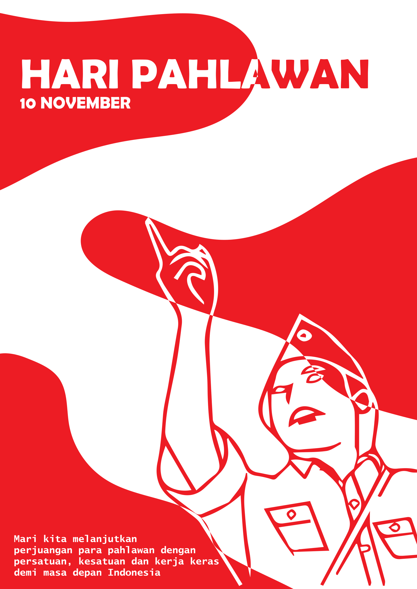
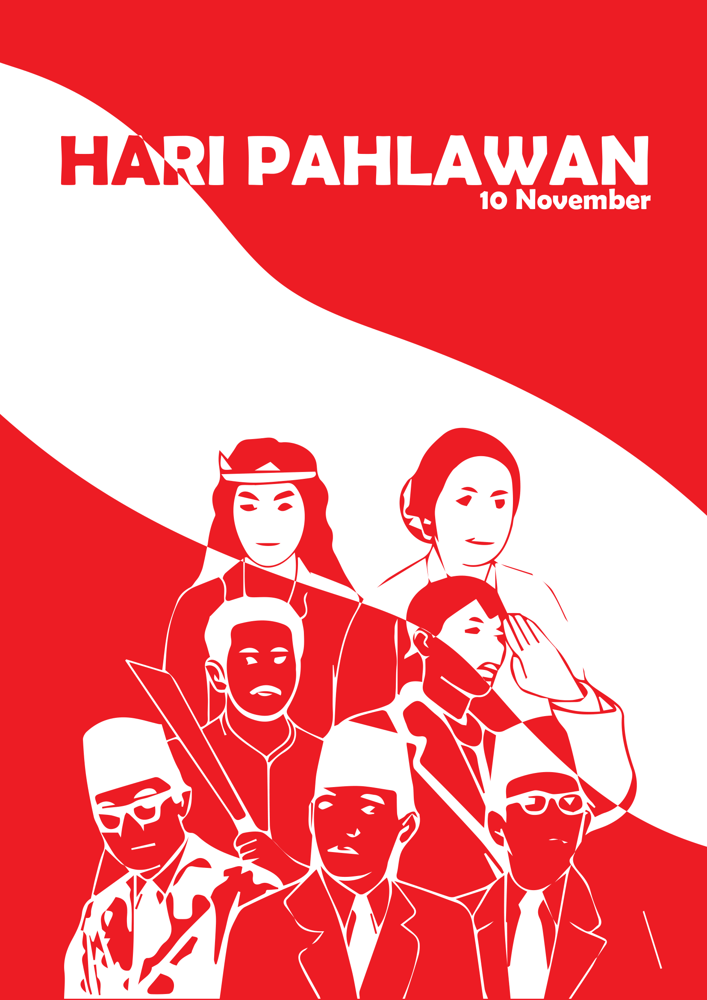

Hari Pahlawan Nasional
Hari Pahlawan Nasional adalah sebuah hari peringatan nasional di Indonesia yang diperingati setiap tanggal 10 November. Hari ini bertujuan untuk mengenang dan menghormati jasa serta perjuangan para pahlawan yang telah berkorban untuk memperjuangkan kemerdekaan Indonesia. Peringatan ini khususnya mengacu pada peristiwa Pertempuran Surabaya yang terjadi pada 10 November 1945, di mana rakyat Indonesia, baik tentara maupun masyarakat sipil, bersatu melawan pasukan penjajah Belanda yang ingin kembali menguasai Indonesia setelah kemerdekaan diproklamasikan pada 17 Agustus 1945.
Pahlawan-pahlawan
Hari Pahlawan Nasional mengenang berbagai pihak yang berkontribusi dalam perjuangan kemerdekaan, terutama yang terlibat dalam Pertempuran Surabaya pada 10 November 1945. Tokoh penting seperti Bung Tomo, seorang orator yang memimpin perlawanan rakyat Surabaya, serta arek-arek Suroboyo, pemuda yang menjadi garda terdepan dalam pertempuran, ikut berperan besar dalam melawan pasukan Sekutu. Tentara Republik Indonesia (TRI) juga berkontribusi besar dalam menjaga kemerdekaan, bersama dengan seluruh rakyat Indonesia yang memberikan dukungan materiil dan moral. Selain itu, banyak pahlawan tak terkendali yang berjasa, meskipun namanya tidak tercatat dalam sejarah. Semua perjuangan ini menjadi simbol penghormatan terhadap mereka yang telah berjuang demi kemerdekaan Indonesia.

Kesimpulan
Hari Pahlawan Nasional adalah hari yang penuh makna untuk mengenang perjuangan para pahlawan yang telah berkorban demi kemerdekaan Indonesia. Peristiwa penting seperti Pertempuran Surabaya pada 10 November 1945 menjadi simbol perlawanan rakyat Indonesia terhadap penjajah dan sekutu. Tokoh-tokoh seperti Bung Tomo dan arek-arek Suroboyo, serta tentara dan rakyat Indonesia yang turut serta dalam perjuangan, menunjukkan semangat kebangsaan dan patriotisme yang tak tergoyahkan. Hari ini menjadi pengingat bagi kita untuk terus menghargai jasa-jasa para pahlawan dan meneruskan perjuangan mereka dalam menjaga kemerdekaan dan kedaulatan negara.